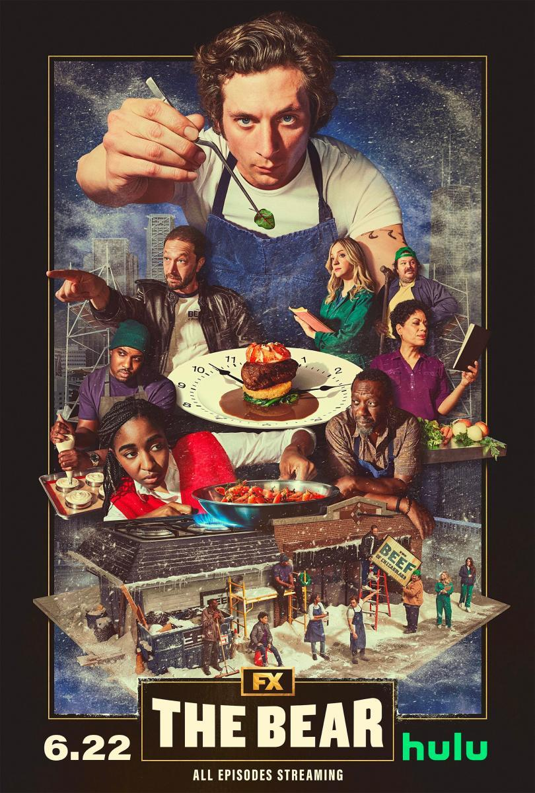

Orgulho e Preconceito

Orgulho e preconceito conta a tumultuada história de amor entre o senhor Darcy e Elizabeth Bennet
10/02/06
Little Women

A história acompanha a vida das irmãs March enquanto caminham para a vida adulta.
09/01/20
Fleabag

Fleabag é uma jovem adulta lidando com problemas quase universais sob o ponto de vista feminino.
08/04/19
Maxxxine

Na década de 1980, em Hollywood, Maxine Minx tem sua grande chance de atingir o estrelato.
11/07/24
Oldboy

Dae-Su é raptado e mantido em cativeiro por 15 anos num quarto de hotel, sem qualquer contato com o mundo externo.
13/05/05
Pobres Criaturas

A jovem Bella Baxter é trazida de volta à vida pelo cientista Dr. Godwin Baxter.
08/12/23
Floribella
Inspirada por Cinderela e A Noviça Rebelde, Floribella é a "Cinderela dos anos 2000", onde o sapato de cristal foi trocado por um tênis.
04/04/06
Fim

Cinco amigos cariocas rememoram as passagens marcantes de suas vidas: festas, separações, manias, inibições, arrependimentos.
25/10/23
O palhaço

Benjamim e seu pai, Valdemar, formam a divertida dupla de palhaços Pangaré e Puro Sangue.
28/10/11
The Bear
Carmen Berzatto, um chef de cozinha premiado sai de Nova York para administrar um restaurante desorganizado em Chicago.
23/06/22
Gone Girl

No dia de seu quinto aniversário de casamento, Amy desaparece. Nick, seu marido, torna-se o principal suspeito.
02/10/14
Bingo

Augusto sempre sonhou com o estrelato e finalmente tem sua chance ao se tornar Bingo, um palhaço apresentador.
24/08/17